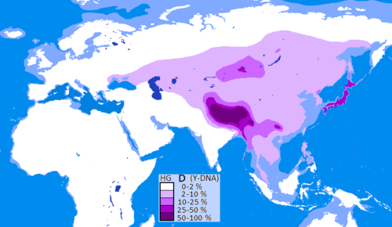
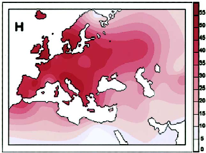
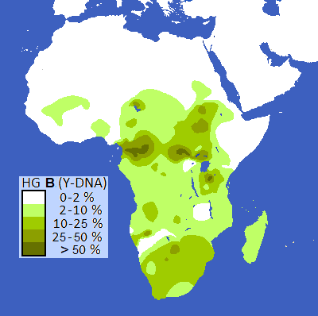
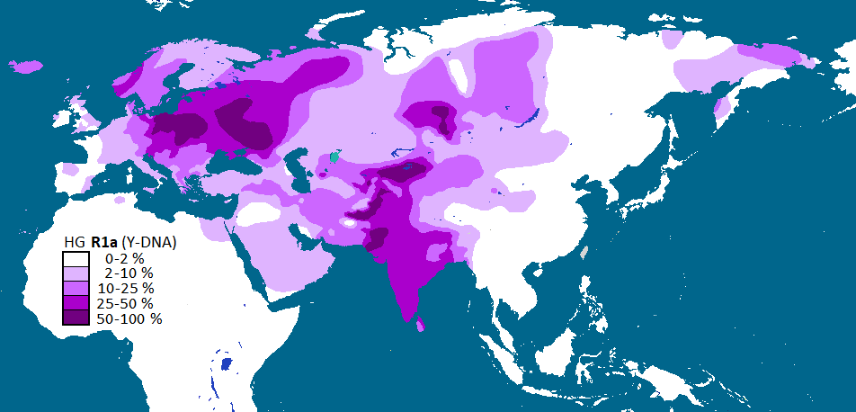
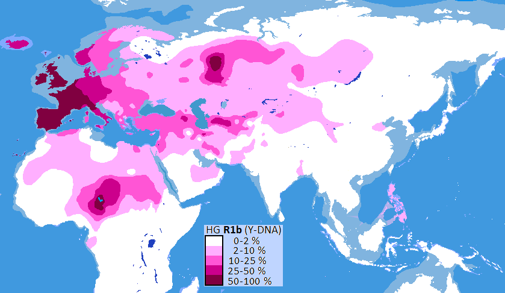
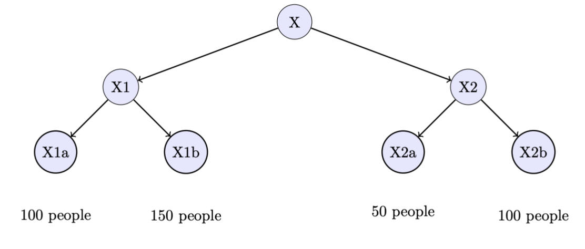
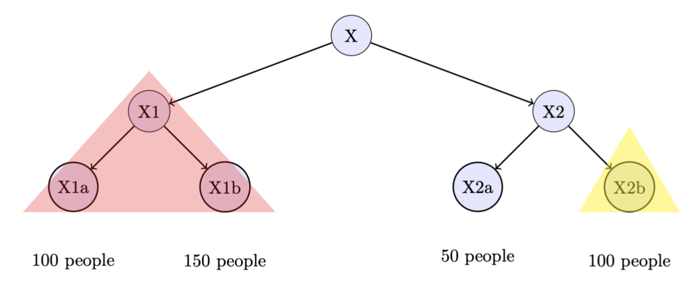
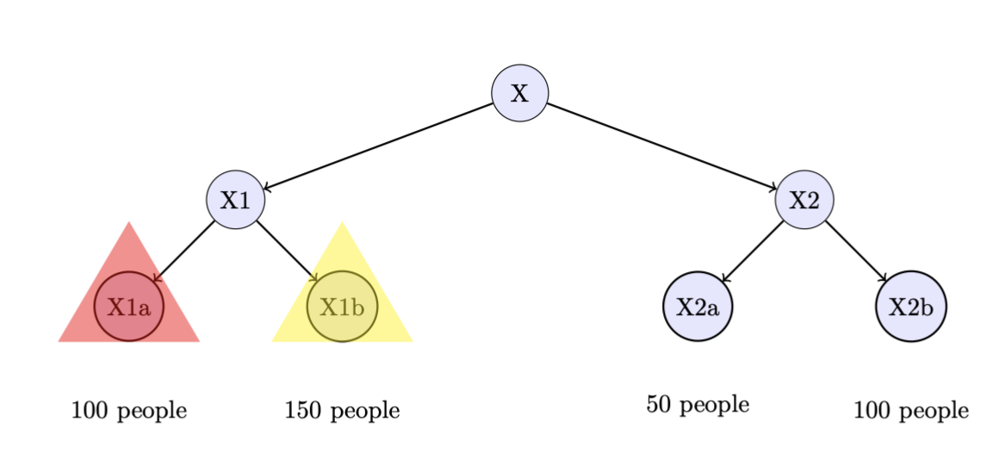

An innocent question about labeling chromosome data turned out to be a surprisingly instructive algorithms problem. It is the problem I've seen which uses the most areas of basic algorithms simultaneously, without requiring any particularly specialized knowledge.
From the perspective of a computer scientist, the term "family tree" is very misleading. Everyone has two genetic parents, and many people have more than one genetic descendant, so the graph of human genetic relations is very far from being a tree.
This means, in more pedestrian terms, that no human has a single "heritage". Even if both of your parents hail from the same place, you (probably) have four distinct grandparents, eight great-grandparents, and so forth. While people do marry their very distant relatives so the number of ancestors does not keep doubling forever and ever, the average person of European descent might have somewhere around one million ancestors who were alive in the year 1500. The chances of each of those people being from the same place, even from Europe as a whole, is near zero.
It turns out that the graph of humanity can in fact be made into a tree. While each person inherits half of their DNA from each biological parent, there are two regions of the genome which are inherited from one parent only. If we look at mitochondrial DNA, which is inherited only from the mother, suddenly the dazzling complexity of the human family tree is eliminated almost entirely. Each person has exactly one mitochondrial parent (their mother), so it is possible to create a maternal-ancestry tree back to the dawn of humanity.
Similarly, every biological male inherits their Y chromosome only from their father, so considering only father-to-son inheritance, we arrive at a second family tree of humanity, a paternal--ancestry tree stretching back hundreds of thousands of years. In this way, everyone alive actually finds their place in two family trees. And these are trees that computer scientists can finally be happy with.
These two family trees, while finally proper trees in the mathematical sense,
are still incredibly vast -- both trees have tens of thousands of boughs, little
clusters of humanity united by common maternal or paternal descent. Researchers
therefore have selected some large branches of each tree, called "haplogroups",
and given them names.
For example, paternal haplogroup D mostly contains men native to Tibet and
Japan, and a few scattered in some other locations like West Africa and the
Andaman islands.

To contrast, maternal haplogroup H is much more widespread,
occurring in roughly 40% of people from most European-derived populations.

Subgroups are given by appending numbers and letters to the initial name in an alternating pattern. For instance, maternal haplogroup U has subgroups U1 through U9, U1 itself has subclades U1a and U1b, and so forth. One particular paternal haplogroup, common in Western European men, is designated haplogroup R1b1a1b1a1a.
However, the history of human population expansions means that nodes on the
tree are of vastly different sizes. This is especially the case in the
paternal tree, because throughout history, successful men have sired huge
numbers of children. Haplogroup B, originating in the first humans to settle
the central African rainforest, is common today in parts of Africa and occurs
in a few percent of African-American men for a total of a few million people
worldwide.

On the other hand, paternal haplogroup R happened to include the first
people to domesticate the horse and spread chariot technologies across
Eurasia, so today it includes the majority of men in North America, Europe,
and South Asia for a total of roughly one billion living males.
 
While learning about this, I began to think: if we could start over, how could we label the tree most fairly? Today, haplogroups R and O together contain about half of living males. The rest of them, haplogroups A through T, together complete for the other half. What would be the most fair labeling possible? And is there a way to determine it algorithmically?
You are given a rooted tree of N nodes where every leaf node has a weight.
(Imagine this as one of humanity's two trees, where each leaf node is a cluster
of people sharing a similar Y chromosome or mitochondrial DNA sequence.)

You are allowed to label some nodes. Then, the "weight" of a label is the total sum of weights of all descendant nodes. For example in the above diagram, if we label node X1, then its weight is 250.
Suppose we have two labels: X1 with weight 250, and X2b with weight 100. Then
the weight of the "miscellaneous" nodes (that is, just X2a left over) is only
50. These represent the people who don't fit into any named group.

If we have \(k\) labels, none of which is a descendant of any other, then we have
\(k+1\) group sizes \(w_1 \ldots w_k\): the number of descendants of each label, and then a
"leftover" bucket size \(x\). In this example, we have \(k=2\) and \(w_1=250,w_2=100,x=50\).
Here, the largest bucket size is 250. However, here is an alternate placement with
\(k=2\) where the largest bucket size is only 150:

So the question becomes: given a tree and a number \(k\) of labels we are allowed to use, can we determine an optimal configuration of labels which gives us the smallest maximum bucket size?
Stop here if you want to think of the solution by yourself. Otherwise, it will be discussed below.
We have a tree with \(N\) nodes total. Each leaf node has an integer weight, from 0 to a maximum \(M\). We are granted \(k\) labels which we can use. How quickly can we determine $$\min_{\text{all label placements}} \max(w_1 \ldots w_k, x)?$$ Let's check one thing real quick: even assuming precomputing the weight of each label (which is not an unreasonable assumption), the brute force strategy requires checking \({N \choose k}\) label combinations. We can approximate this by $${N \choose k} = \frac{N!}{k!(N-k)!},$$ which grows exponentially with \(N\). We have to be able to do better.